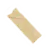
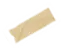

-
No todo
es música,
Pero sí somos nosotras
Antes de clavarnos en lo sonoro, Las Karencitas Descalzas hablábamos de todo:
tradiciones, cultura pop, cine, anécdotas absurdas y cosas que simplemente nos volaban la cabeza. Aquí viven esos episodios que no suenan a riffs ni a metal, pero que traen la misma esencia: curiosidad, sarcasmo y corazón.Entre ellos, un especial sobre el Día de Muertos, donde exploramos esa mezcla tan mexicana entre la vida, la muerte y el desmadrito del más allá.
Dale play
-
 